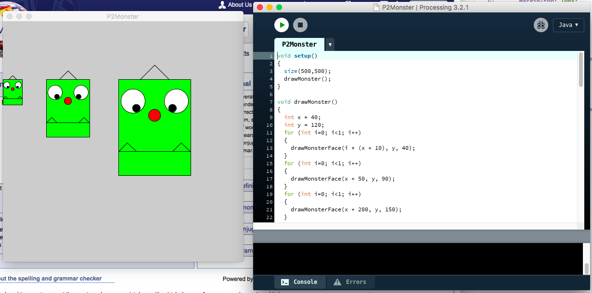

- Programming
This unit is aimed to learn how to program in the Java laguage. This course helps me develop simple vocabulary of commands using Processing. (e.g. java command to draw simple graphical), building knowledge of programming constructs.
My profolio
The picture below shows one of my work on processing which is a part of my profolio. So far I have done 3 portfolio and has been marked by my tutor. I found out is quite interesting for me in programming unit, it is quiet funny to coding a project by using the Processing. Despite being hard in the beginning, but I already get on the course and catch up everything in the lab.
- Computer Systems Fundamentals/CSF
This unit is aimed to encountering on my degree requires the use of data and programming structures and the rules for manipulating them. There are two subjects in this unit, Logic gate and Mathematics. Mathematics provides a language for describing structures and their properties. Logic gate shows me how are programs written in high level languages, How hardware executes the resulting program and what is the interface between software and hardware. This unit is aimed to encountering on my degree requires the use of data and programming structures and the rules for manipulating them. There are two subjects in this unit, Logic gate and Mathematics. Mathematics provides a language for describing structures and their properties. Logic gate shows me how are programs written in high level languages, How hardware executes the resulting program and what is the interface between software and hardware.